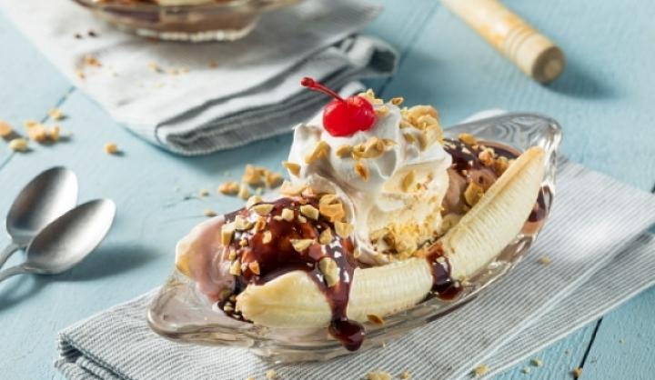

Banán split recept

Az internet legjobb banán split receptjét fogjátok ezen az oldalon megtalálni
Ünnepeld meg a jó időt egy finom Banana Splittel! Az ikonikus fagylaltkehelyből a saját ropogós verziónkat mutatjuk, próbáld ki, megéri!
Összetevők
- 20g Nestlé Fitness granola mézzel
- 1db banán
- 2-3 gombós vaníliafagyi
- NESQUIK csokiszirup ízlés szerint
- tejszínhab
Elkészítés
- A banánt vágd félbe, formálj belőle csónak formát a tálon.
- Helyezd a felezett banánok közé a vanília fagyi gombócokat.
- A fagyit és a banánokat a csokisziruppal, a tál két oldalát tejszínhabbal díszítsd
- A fagylaltok tetejét szórd meg a ropogós granolával!